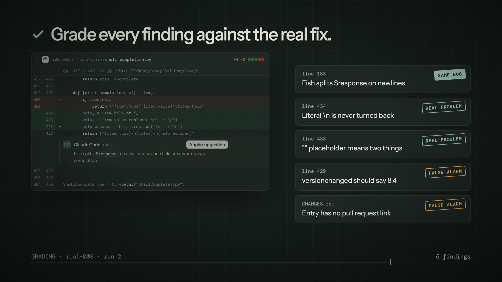

01 · mine
Find where each bug came from
For every fix commit, it finds the commit that introduced the bug: the commit the fix names, checked with git blame on the lines the fix rewrites.
ReviewReplay finds the commits that introduced bugs in your own repository, replays each one to your AI code reviewer, and scores what it catches, what it gets wrong and what it costs. Free, MIT, and it runs on your machine.
This is the real interactive page, not a screenshot. Click a box to trace what feeds it.
A location gate, four judge votes, and a code check for the claims the judges can't settle.
Two bugs missed in all 6 reviews, axios and cobra. A pattern to test with more cases.
axios made message non-enumerable. Mined from the fix, replayed, reviewed 6 times, found 0 times.
Diagrams made with Archify; their specs are in docs/media.
Public benchmarks test reviewers on someone else's pull requests. ReviewReplay uses the bugs your team already fixed, so the score reflects your code, your conventions and your kinds of mistakes.
For every fix commit, it finds the commit that introduced the bug: the commit the fix names, checked with git blame on the lines the fix rewrites.
A draft answer key records the file, the line and what goes wrong. You read and confirm every case before it counts.
The project is exported at the parent commit with no git history, and the buggy change is applied as uncommitted edits, like an open pull request.
Each reviewer reviews the change three times, read-only: it can read files and run git diff, log and show, nothing else.
Reviews are split into findings. Each one is matched to the bug by location, voted on by four judges, and checked against the code when they can't settle it.
Bugs found, precision, false alarms, cost and time per review, with 95% intervals and paired differences against a baseline.
Claude Code (claude-sonnet-5-5) alone, and with code-review-skill at commit 4850184. Three runs per bug for each reviewer. Each card links to its committed runs.
| Measure | Alone | With skill |
|---|---|---|
| Bug found | 26 / 36 | 27 / 36 |
| Serious false alarms | 13 | 10 |
| Mean cost per review | $0.065 | $0.097 |
Paired difference in precision: +10 pts [+1, +16]. A modest lead, at about 1.5× the cost. Runs: first 4 bugs, 8 more.
| Measure | Alone | With skill |
|---|---|---|
| Bug found | 18 / 24 | 15 / 24 |
| Serious false alarms | 5 | 10 |
| Median cost per review | $0.049 | $0.074 |
Paired difference in precision: −13 pts [−20, +3]. The interval includes zero, so the gap isn't clear yet. Run: m3-js-go.
A Black f-string tokenizer state, a PEFT LoRA conv that drops dilation, an axios error that loses message, and a cobra type that stops some callers compiling.
Grading is checked across two models (Sonnet and Opus agreed on 82% of 172 JS/Go findings, κ 0.75), not yet by people. Eight and twelve bugs are small samples: read these numbers as a direction.
Each case is a commit from a permissively licensed project that introduced a bug a later commit fixed. Each card shows that commit's title. Open one for the answer key and how it was checked.
An LLM judge on its own is easy to fool and hard to trust. Every finding goes through the same gates, and every vote is saved, so any number can be audited.
A finding within 3 lines of the known bug can count as finding it. Within 15 lines it still reaches the judges, so a slightly-off line number isn't thrown away.
Four votes per finding: Sonnet three times and Opus once. The majority label wins. Findings with no majority are marked contested.
Serious claims the judges can't settle are checked against the project's code, library source included. They come back confirmed, refuted or still unsure.
Reviewers are paired by case, with 95% bootstrap intervals. Contested findings can be dropped to see whether the result still holds.
$ reviewreplay compare results/m3-real-0{13..20} --kind real subject bug found precision baseline 18 / 24 90% (47/52) code-review-skill-invoked 15 / 24 77% (40/52) paired vs baseline precision Δ -13 pts [-20, +3] recall Δ -12 pts [-33, 0] judges 172 findings, 4.0 votes each 123 unanimous · 14 contested sonnet vs opus: 82% agree, κ 0.75 verify 13 unsure checked: 13 confirmed, 0 refuted
A real pallets/click bug, rewound to the commit that caused it and replayed to Claude Code. The review found the bug, two other real problems and two false alarms.
Watch the 21-second demo →
summary.md with recall, precision, clean passes, decoy traps, cost and time, each with a 95% interval.
Raw reviews, extracted findings and every judge vote are saved as JSON next to the scorecard.
--dry-run prints reviews, cost and time first: about $0.06 and 15 seconds per review.
The GitHub Action re-scores your reviewer when its prompt or skill changes and comments the result.
Stop a run, or hit a usage limit, and the next run picks up where it left off. Finished reviews are cached.
Reviewers can't edit files or run your code, and ReviewReplay never runs code from the projects it replays.
doctor firstChecks git, claude, Python and the cache folder, and prints one fix per problem. It spends nothing.
Reviews run on your own claude login or API key. ReviewReplay never asks for or stores one.
A reviewer is a small JSON file. Claude Code is built in; anything else is a command that takes a prompt and prints a review.
Any model, with a read-only allow-list.
subjects/baseline.jsonNatural or invoked. Tested with code-review-skill @ 4850184.
subjects/code-review-skill-invoked.jsonRun read-only through their own CLIs. Results to come.
subjects/examples/codex.jsonClaude Code's /code-review, a team prompt, or any command.
"command": ["your-cli", "{prompt}"]# install, then run inside your repository pip install git+https://github.com/GgauravJ05/reviewreplay cd your-repo reviewreplay doctor # checks setup; spends nothing reviewreplay init --dry-run # which fixed bugs it would use reviewreplay init # mine them into draft cases reviewreplay run --cases .reviewreplay/cases \ --out .reviewreplay/results --include-drafts --dry-run reviewreplay run --cases .reviewreplay/cases \ --out .reviewreplay/results --include-drafts reviewreplay report .reviewreplay/results
# a step in .github/workflows/reviewreplay.yml - uses: GgauravJ05/reviewreplay@main with: subjects: baseline,our-reviewer anthropic-api-key: ${{ secrets.ANTHROPIC_API_KEY }} # Re-scores the reviewer when its subject file or your # cases change, and comments the scorecard on the PR.
# subjects/codex.json: any CLI that prints a review { "name": "codex", "command": ["codex", "exec", "--sandbox", "read-only", "{prompt}"] } # then compare it with Claude Code on the same cases reviewreplay run --subjects baseline,codex --runs 3
One pip install. Python 3.10+, no dependencies. reviewreplay doctor checks the rest.
reviewreplay init turns your fixed bugs into draft cases. Read each one and keep the ones you agree with.
See the cost with --dry-run, then run. The report shows which reviewer caught what, and at what cost.
Full guide in the README. Adding a case by hand: ADDING_A_CASE.md.
About $0.06 and 15 seconds per review, from the committed runs. Twelve cases, two reviewers and three runs come to about $4.25 and six minutes, plus grading. --dry-run prints the estimate before anything is spent.
Only what your reviewer sends to its own provider, exactly as when you use it normally. ReviewReplay runs locally, has no server and collects nothing.
Not for Claude Code: reviews and grading can run on your own claude login. In CI, the Action takes a key from your repository secrets. ReviewReplay never stores one.
Public benchmarks use shared pull requests that may be in a model's training data, and they aren't your code. ReviewReplay answers the question your team has: on our bugs, which reviewer, prompt or skill does better, and at what cost?
Each finding gets four votes from two models, unsure claims are checked against the code, and contested findings are reported apart. The two models agreed with κ 0.75 on the JS/Go run. Human labels are the next step; until then, treat small differences with care.
Gaurav Jadhav (@GgauravJ05). It started from a question on code-review-skill#32: does a review skill measurably improve reviews? MIT licensed; contributions welcome.